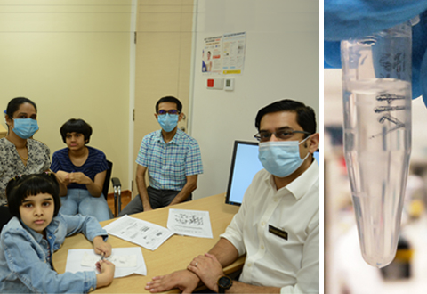

Children under five at lowest risk of acquiring COVID-19 from adults
Click here to read about Transmission risk of SARS-CoV-2 in educational settings.
A household transmission study by KK Women’s and Children’s Hospital (KKH) has found children under five years old to be at lowest risk of acquiring COVID-19 infection from adults.In 137 households with laboratory-confirmed COVID-19 adults, adult-to-child transmission was documented to have occurred in 13 cases across seven households.This describes a transmission rate of 6.1 per cent among children exposed in households.The study findings were published in The Journal of Pediatrics.
1
Key findings:
Younger children may be more resistant to SARS-CoV-2 infection
'Our study found that the adult-to-child transmission rate of SARS-CoV-2, the virus that causes COVID-19, was lowest in the youngest age group.Some studies have found a trend for increased expression of angiotensin-converting enzyme 2 receptors (the receptor that SARS-CoV-2 uses for host entry) in nasal epithelium with increasing age; thus it is possible that younger children are more resistant to SARS-CoV-2 infection at a cellular level,' shares corresponding author, Dr Yung Chee Fu, Consultant, Infectious Disease Service, KKH.
In Singapore, due to concern that children infected with COVID-19 might not display symptoms, COVID-19 screening was implemented for all paediatric household contacts of persons with laboratory-confirmed COVID-19.
From March to April 2020, among 137 households with a total of 223 adults with laboratory-confirmed COVID-19, 213 children under the age of 16 years were tested for COVID-19.In age-stratified analysis, the adult-to-child transmission rate was as follows:
'Understanding how COVID-19 affects children differently from adults is very important to guide clinical management of children with COVID-19 and recommendations for public health measures,' adds Dr Yung.
'The very low adult-to-child transmission rate among young children under five years old in households may suggest that strict compliance with infection control may be able to mitigate or reduce the risk of transmission from adults to children in household settings.'
Read the full study here.
Posted On: 2020-10-12T16:00:00

Content Date: 2020-10-12
Download Date: 2021-04-08
Document ID: L0C049M9O